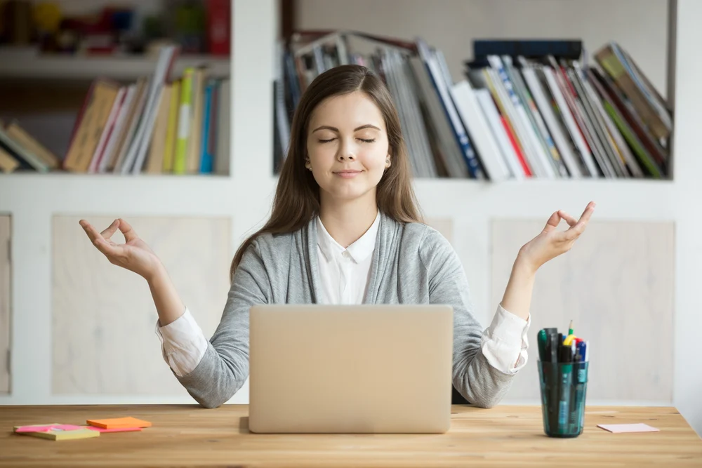
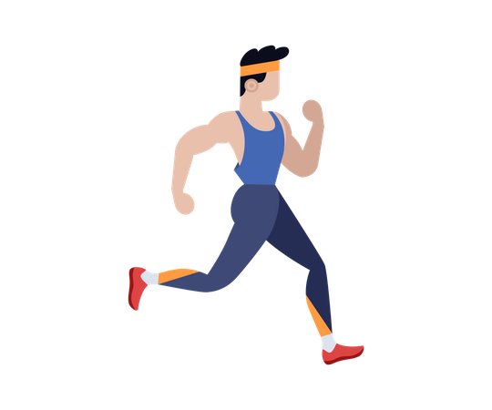
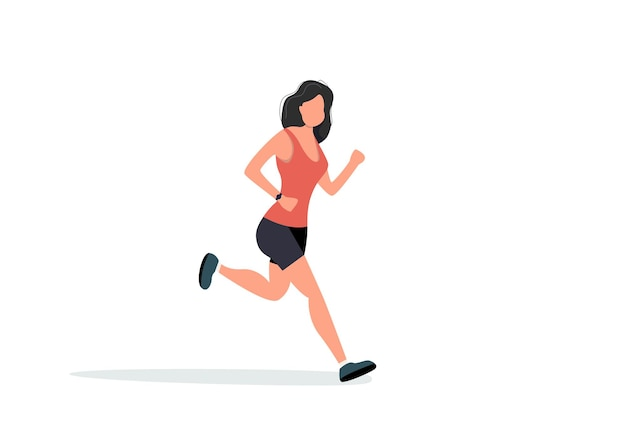

Корисний стрес: як отримати позитив від негативних ситуацій
Ми завжди говоримо про шкоду стресу: про його негативний вплив на здоров’я та на якість нашого життя. Але виявляється від нього можна отримувати ще й користь. Особливу вигоду від стресу психологи помітили в роботі: після напруженої ситуації працівники краще виконували завдання й досягали успіхів. Розповідаємо, який саме стрес корисний для робочих процесів та як цю користь правильно отримати.
Потрібний стрес
Теперішнє життя важко уявити без стресових ситуацій, особливо у 2020 році. Щодня ми чуємо негативні новини, хвилюємося за стабільність на роботі та нервуємо, коли трапляються факапи. Але короткотривалі стресові обставини лише йдуть нам на користь. Мабуть, у вас траплялася ситуація, коли ви помилялися на роботі та отримували прочуханку від керівництва. Звичайно, у кожного реакція на такі події різна, але для всіх це однозначно стресова ситуація. Ви помічали, що частоn після такої події наче з’являється друге дихання, знаходиться правильне рішення і все завершується успішно? Це все позитивний вплив стресу.
Як це працює? Мозок отримує сигнал про небезпеку і вмикає запасні ресурси вашого організму. Це своєю чергою підвищує швидкість реакції та рівень адреналіну. Тому ви можете з легкістю подолати перешкоди та розв’язати найскладніші завдання.
Позитивні прояви короткотривалого стресу:
- загострення уваги;
- покращення продуктивності;
- збільшення енергії та ентузіазму;
- поява бажання до розв’язання проблеми;
- виникнення креативних ідей.
Ці прояви допомагають перемогти негативну ситуацію тут і зараз. Стрес час від часу також покращує вашу пам’ять, активізує інтелектуальну діяльність мозку, тому всі задачі вирішуються швидше, покращує стійкість організму перед іншими неприємними випадками. Окрім того, невеликі емоційні струси позитивно впливають на імунітет, тому в період епідемій стрес може бути дуже корисним. Головне – правильно його дозувати.
Стрес без накопичення
Основна умова, за якої стрес приноситиме користь, – його короткотривалість. Якщо стресові ситуації у вашому житті трапляються часто і організму доводиться постійно мобілізовуватися, то він швидко «зношується». Тоді починають виникати проблеми зі здоров’ям, вигорання на роботі та інші неприємності.
Між позитивним стресом та його накопиченням і негативним ефектом – дуже тонка межа. Багато вчених протягом довгих років намагалися її виокремити, але цього зробити так і не вдалося. Проте їх думки збігаються в одному: якщо після однієї негативної ситуації наступає інша, стрес стає хронічним і руйнує організм.
Негативні прояви хронічного стресу:
- порушення роботи життєво важливих органів (серцево-судинної, травної, нервової систем);
- підвищення ризику виникнення смертельно-небезпечних хвороб;
- щоденні проблеми зі здоров’ям: головний біль, порушення травлення, безсоння;
- поява шкідливих звичок (так звані «запивання» та «заїдання» стресу);
- агресивність, підвищена збудливість тощо.
Як контролювати стрес?
Для того, щоб отримувати від стресу лише позитив, зрозуміло, що потрібно уникати його накопичення. Але як це зробити у сьогоднішніх реаліях?
- Уникати причин стресу.Якщо ви перебуваєте в стресі після коронавірусних новин – просто не дивіться телевізор. Деяких стресових ситуацій уникнути важко, тому що вони можуть зовсім від вас не залежати. Проте за можливості обходьте стороною те, що змушує ваше серце битися швидше.
- Змінити ставлення. Існує давно відомий вислів: якщо ви не можете змінити ситуацію – змініть ставлення до неї. Увімкніть логіку та об’єктивність і намагайтеся зрозуміти, що від ваших надмірних хвилювань краще не стане.
- Розв’язуйте проблему.Якщо ситуація така, що ви можете вирішити, – приступайте до цього відразу. Чим далі відкладатимете розв’язання проблеми, тим більше будете думати про неї, а значить стрес буде накопичуватися.
- Відпочивайте. Намагайтеся розслабитися та досягнути стану спокою Для цього робіть те, що вам приносить задоволення: хтось може заспокоїтися під час пробіжки, хтось – розмальовуючи картину за номерами. Також можете спробувати медитацію як спосіб отримати психоемоційний спокій.
- Давайте вихід емоціям. Коли вам хочеться поплакати – сміливо плачте. Це допоможе зняти нервове напруження і пережити ситуацію.
- Займайтеся спортом. Фізактивність може посилити вироблення ендорфінів та зменшити рівень гормонів стресу (адреналіну та кортизолу).
Як спорт допомагає боротися зі стресом.
Приклади тренувань у будь-яких умовах


Ендорфіни часто називають "гормонами щастя".
Адже ці нейромедіатори – природні знеболювальні,
які здатні покращити
настрій та розслабити.
Де знайти мотивацію?
Головне – не змушуйте себе тренуватися понад власні можливості. Це лише посилить наявний стрес. Наприклад, якщо інтенсивні тренування вам не до снаги – спробуйте йогу, стретчинг чи звичайну руханку.
"Якщо бракує мотивації, подумайте про майбутнє. Війна рано чи пізно закінчиться, а ваше тіло та здоров’я залишиться. У критичний момент потрібно ще більше піклуватися про себе. Спорт – один з аспектів, який допоможе підтримати організм", – пояснює Олеся.
Яку фізичну активність обрати?
Головне правило успішного тренування та прогресу – займайтесь тим, що вам дійсно подобається.
"Запитайте себе: "Чого я потребую чи хочу саме зараз?". Наприклад, ви хочете заспокоїти своє тіло. Порухайте головою, розімніть плечі. Також спробуйте подихати: сядьте у зручну позу, зробіть дуже глибокий вдих і повільний видих. Повторіть декілька разів. Це допоможе побороти тахікардію, сповільнити дихання та повернути пульс у норму. Тіло заспокоюється, а розум та думки ніби очищуються", – радить експертка.
Також важливо зважати на умови, у яких ви перебуваєте. Від цього залежить вид активності:
- Тренування у бомбосховищі
Мало місця, затерпли ноги та спина? Почніть із самомасажів, радить тренерка.
"Сядьте у зручну позу. Розтирайте шию та руки. Зробіть самомасаж з п’ят до стегон, ніби витискаючи набряк вверх. Це допоможе розігнати лімфу, яка застоялась за години сидіння, і дещо зняти набряк", – радить Олеся.
Якщо висота сховища дозволяє, встаньте, випряміть спину та попіднімайтесь на пальчики. Це допоможе розім’яти литкові м’язи, які ніби помпи, качають кров доверху.
"Це дуже корисно. Адже коли ми сидимо, у нас немає великої циркуляції крові. Відбувається застій не тільки лімфи, але й крові у венах. Її потрібно прокачати. Також за можливості спробуйте підняти ноги догори", – додає тренерка.
Далі – попрацюйте зі спиною за допомогою базових вправ з гімнастики. Почніть з плечей – покрутіть плечима вперед-назад. Зробіть кішечку:
- Станьте на коліна та упріться долонями в підлогу. Руки та спина мають бути прямими.
- Зробіть вдих і прогніться вниз так, щоб опустити живіт якомога ближче до підлоги. Лопатки мають бути зведені, голова піднята вверх. Затримайтесь у такому положенні.
- Зробіть видих і максимально округліть хребет, прагнучи доверху. Шия і голова спрямовані вниз.
- Поверніться у вихідну позицію.
Далі підійдіть до стінки, простягніть руки перед собою. Обіпріться об стінку та спробуйте прогнутися.
"Якщо є бажання прокачати м’язи сідниць, то ляжте на спину, зігніть ноги в колінах та підіймайте таз догори. Ця вправа називається сідничний місток. Вона допоможе залучити сідничні м’язи, розігнати кров та сприятиме виділенню ендорфінів. Для більшої ефективності виконайте 1-2 підходи по 10-15 разів".
Я текст
Я спан Я спанЯ заголовок другого рівня
- Я нумерований список 1
- Я підпункт нумерованого списку 1
- Я підпункт нумерованого списку 2
- Я підпункт нумерованого списку 3
- Я підпункт нумерованого списку 4
- Я нумерований список 2